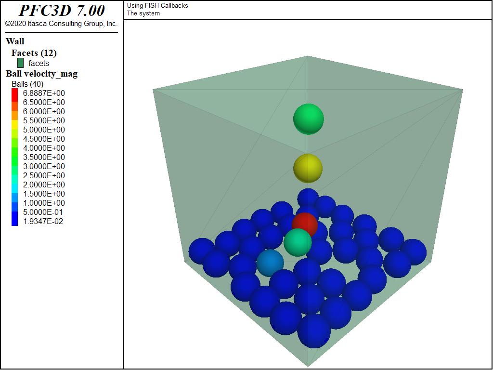
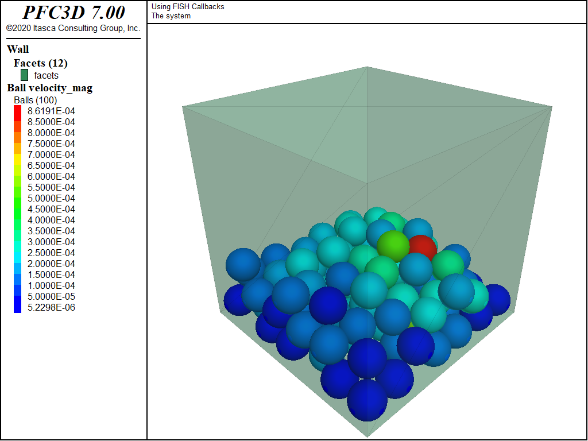
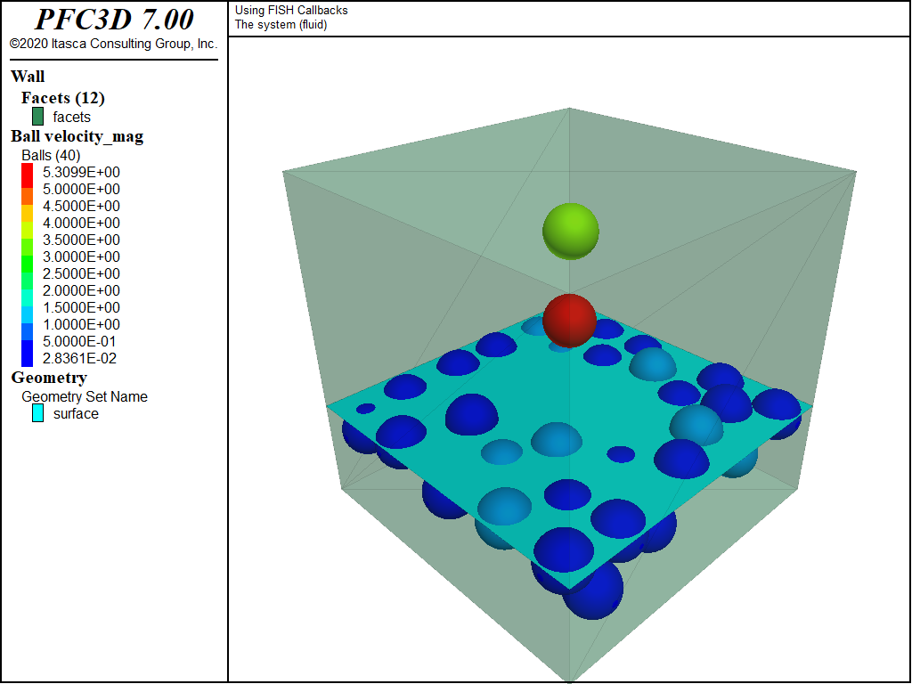
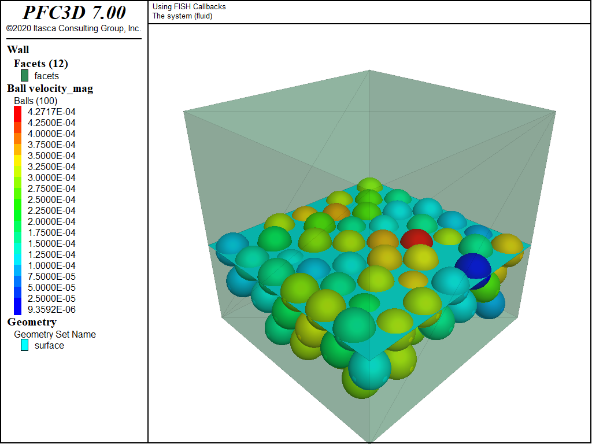
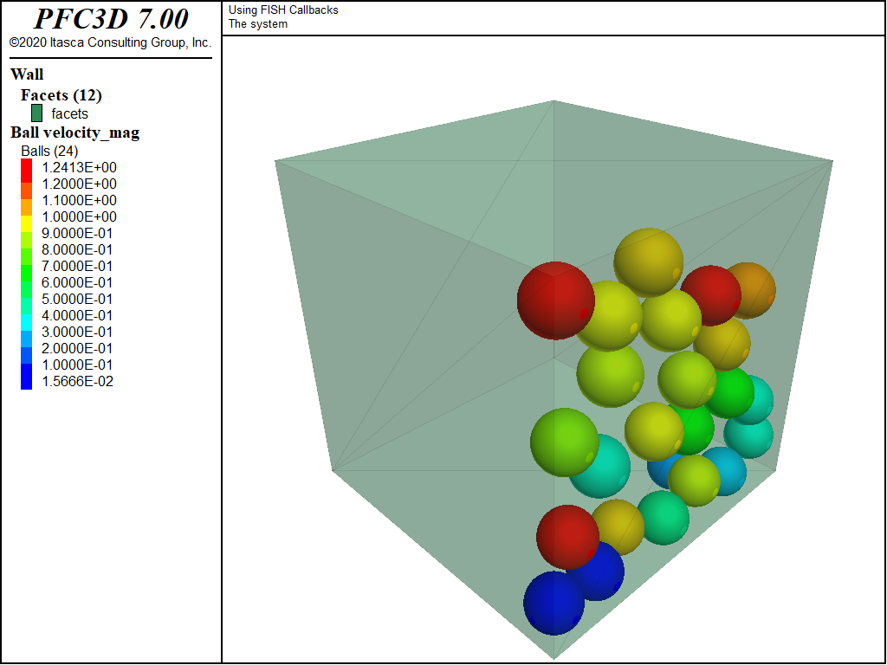
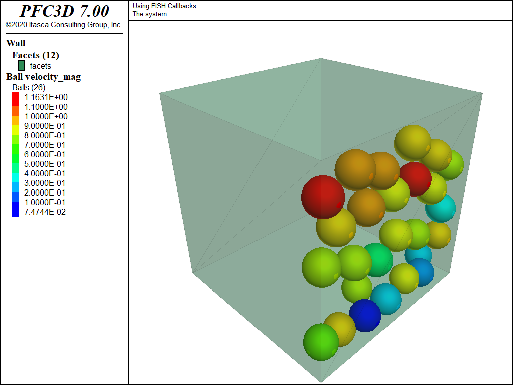

使用 FISH 回调
引言
注意
本算例的项目文件可在 PFC 中查看或运行。[1]所用的数据文件（data files）列于本算例末尾。
可使用 设置FISH回调命令（fish callback） 命令注册用户定义的 FISH 函数，使其在仿真过程中响应特定的回调事件而执行。回调可发生于以下时机：
- 在循环序列中选定的位置；或
- 响应特定事件时。
本教程说明了若干可使用回调来执行 FISH 函数的情形。
数值模型
要重现下文讨论的模型，请打开 菜单（位于 PFC3D 中）下提供的名为“Callbacks.prj”的项目文件。
在计算循环中的位置
计算循环由一系列按特定顺序执行的操作组成。每个操作都与一个浮点数里程碑相关联，该里程碑也称为循环点（见下文）。
| 循环点 | 循环操作 |
|---|---|
| -10.0 | 校验数据结构（Validate data structures） |
| 0.0 | 确定时间步（Timestep determination） |
| 10.0 | 运动定律（或更新热体）（Law of motion (or update thermal bodies)） |
| 15.0 | 各过程之间的体耦合（Body coupling between processes） |
| 20.0 | 推进时间（Advance time） |
| 30.0 | 更新空间搜索数据结构（Update spatial searching data structures） |
| 35.0 | 创建/删除接触（Create/delete contacts） |
| 40.0 | 力-位移定律（或热接触更新）（Force-displacement law (or thermal contact update)） |
| 42.0 | 累积确定性量（Accumulate deterministic quantities） |
| 45.0 | 各过程之间的接触耦合（Contact coupling between processes） |
| 60.0 | 运动方程的第二遍计算（PFC 中不使用） |
| 70.0 | 热计算（PFC 中不使用） |
| 80.0 | 流体计算（PFC 中不使用） |
在计算执行过程中进行干扰可能是危险的，因而不被允许。例如，若能在某球颗粒上计算时步的过程中删除该球颗粒，程序将会崩溃。因此，这些循环点是 保留的，即用户不得将 FISH 函数附加到这些循环点上的回调事件。出于类似原因，用户不得在循环点 40.0（力-位移计算）与 42.0（确定性量的累加）之间进行干扰，且模型组成部分（球颗粒、刚性簇或子颗粒以及墙或面片）的创建与删除仅允许在循环点 0.0（时步评估）之前进行。
除上述限制之外，用户可以将 FISH 函数注册到循环序列中执行，从而对模型进行操作，方法是在用户自定义的循环点（例如循环点 10.1、10.15、10.3 等）上注册这些函数。
创建球颗粒
第一个示例演示了按周期向模型中插入球颗粒。此示例的完整数据文件为“callbacks1.dat（三维）（callbacks1.dat (3D)）”。下文讨论其中选定的代码行。
本示例模拟一个简单系统，其中球颗粒在箱体内相互作用。使用 FISH 函数 添加球体（add_ball） 按给定频率创建球颗粒。
fish define add_ball
global tnext,freq
local tcurrent = mech.time.total
if tcurrent < tnext then
exit
endif
tnext = tcurrent + freq
local xvel = (math.random.uniform -0.5) * 2.0
local yvel = (math.random.uniform -0.5) * 2.0
local bp = ball.create(0.3,vector(0.0,0.0,1.75))
ball.vel(bp) = vector(xvel,yvel,-2.0)
ball.density(bp) = 1.1e3
ball.damp(bp) = 0.1
end
此函数在数据结构被验证之前注册于循环点 -11.0（请参阅 设置FISH回调命令（fish callback） 命令）。由于 添加球体（add_ball） 在每个循环中执行，因此会将当前力学时间与下一次插入时间进行比较，以决定是否创建球颗粒。
[freq = 0.25]
[time_start = mech.time.total]
[tnext = time_start ]
fish callback add add_ball -11.0
使用下面的命令将模型循环至给定的目标时间。
model solve time 10.0
在执行循环的过程中，球颗粒被插入模型中（图 1（Figure 1））。请注意，由于 添加球体（add_ball） 函数仍注册在循环点 -11.0 上，继续循环时球颗粒会持续插入模型中。


图 1：循环过程中系统的状态，此时 添加球体（add_ball） FISH 函数已注册 为回调。
在此示例中，从回调列表中移除 添加球体（add_ball） 函数，并将模型求解至平衡。因此不会插入新的球颗粒，模型达到平衡状态（如 图 2（Figure 2） 所示）。
fish callback remove add_ball -11.0
model solve


图 2：系统的最终状态。
引入新的物理过程
第二个示例（“callbacks2.dat（三维）（callbacks2.dat (3D)）”）以上述示例为基础。其中引入了两个附加的 FISH 函数，它们注册在循环序列中的不同位置。这些函数对球颗粒施加附加力，以模拟箱体内流体的作用。
首先，定义一个名为 添加流体力（add_fluidforces） 的函数：
fish define add_fluidforces
global vf = 0.0
global zf_, etaf_, rhof_
loop foreach ball ball.list
local vi = 0.0
local d1 = ball.pos.z(ball) - ball.radius(ball)
if ball.pos.z(ball) - ball.radius(ball) >= zf_
; 高于水位
ball.force.app(ball) = vector(0.0,0.0,0.0)
else
local fdrag = -6.0*math.pi*etaf_*ball.radius(ball)*ball.vel(ball)
local vbal = 4.0*math.pi*ball.radius(ball)^3 / 3.0
if ball.pos.z(ball) + ball.radius(ball) <= zf_ then
; 完全浸没
vi = 4.0*math.pi*ball.radius(ball)^3 / 3.0
else
; 部分浸没
if ball.pos.z(ball) >= zf_ then
global h = ball.radius(ball) - (ball.pos.z(ball)-zf_)
global vcap = math.pi*h^2*(3*ball.radius(ball) - h) /3.0
vi = vcap
else
h = ball.radius(ball) - (zf_ - ball.pos.z(ball))
vcap = math.pi*h^2*(3*ball.radius(ball) - h) /3.0
vi = vbal - vcap
endif
endif
global fb = -1.0*rhof_*vi*global.gravity
ball.force.app(ball) = fb + (vi/vbal) *fdrag
endif
vf = vf + vi
endloop
end
此函数使用 球体施加力（ball.force.app） FISH 内置函数遍历系统中的所有球颗粒，以施加附加力。所施加的力是浮力项 \(\mathbf{F_b}\) 与曳力项 \(\mathbf{F_d}\) 的组合，按下式计算
其中 \(\rho_f\) 为流体密度，\(V_i\) 为浸没的球颗粒体积，\(\mathbf{g}\) 为重力向量，\(\eta_f\) 为流体动力黏度，\(R\) 为球颗粒半径，\(\alpha\) 为未浸没球颗粒体积与球颗粒总体积之比，\(\mathbf{v}\) 为球颗粒速度向量。\(\mathbf{F_d}\) 所采用的表达式是单个球体在层流状态下完全浸没于流体中的典型形式（例如流体黏度较大时）。引入因子 \(\alpha\) 是为了在球颗粒仅部分浸没时减小曳力。
此外还实现了第二个函数，名为 移动表面（move_surface）：
fish define move_surface
global zf0_, gset_
zf_ = zf0_ + (vf/16.0)
loop foreach node geom.node.list(gset_)
geom.node.pos.z(node) = zf_
endloop
end
此函数的目的是调整流体表面高度 z 向力（zf_），调整依据是 添加流体力（add_fluidforces） 累计的球颗粒浸没体积之和。反过来，修改后的 z 向力（zf_） 值又会在 添加流体力（add_fluidforces） 中用于调整下一循环中的浮力。函数 移动表面（move_surface） 还会修改添加到模型中的几何对象的节点高度，以可视化流体表面：
[rhof_ = 1.26e3]
[zf0_ = -1.0]
[zf_ = zf0_]
[etaf_ = 1.49]
geometry set 'surface' polygon create by-position -2.0 -2.0 [zf0_] ...
2.0 -2.0 [zf0_] ...
2.0 2.0 [zf0_] ...
-2.0 2.0 [zf0_]
[gset_ = geom.set.find('surface')]
所选取的参数用于模拟黏度大于球颗粒密度的流体。
在执行循环之前，上述两个函数作为回调注册到循环序列中，其循环点值分别为 50.0 和 50.1：
fish callback add add_fluidforces 50.0
fish callback add move_surface 50.1
这确保两个函数都在 PFC 循环序列中的所有内置操作之后执行，并且 移动表面（move_surface） 在总非浸没体积更新之后执行。若需要在两个函数之间进行额外计算，可以再注册一个 FISH 函数（例如使用值为 50.05 的循环点）。


图 3：流体作用力开启时系统的中间状态。


图 4：流体作用力开启时系统的最终状态。
图 3（Figures 3） 和 4 分别显示了循环过程中以及最终稳定构型下系统的状态。球颗粒被周期性地加入，由于浮力的作用，球颗粒被推向流体表面，其运动受到流体曳力的阻尼。
这里描述的模型可能显得过于简化。值得注意的是，曳力的表达式并未考虑流体速度。然而，这个简单的示例表明，只需几个步骤即可向 PFC 中加入新的物理机制。如果需要包含流体-力学耦合的更精细模型，可以设计更复杂的算法，或者设想与第三方 CFD 求解器进行耦合（参见“PFC3D6.0 的 CFD 模块（CFD module for PFC3D6.0）”一节）。
命名回调事件
为提供更大的灵活性，还可以注册 FISH 函数，使其在循环序列中可能发生的命名事件触发时执行。事件列表如下所示。该列表可能并不详尽，因为用户定义的接触模型可以添加新的事件。
| 事件类型 | 事件名称 | 参数 |
|---|---|---|
| 接触模型 | contact_activated | FISH 数组，特定于接触模型 |
| 接触模型 | slip_change | FISH 数组，特定于接触模型 |
| 接触模型 | bond_break | FISH 数组，特定于接触模型 |
| 创建/删除 | contact_create | 接触指针 |
| 创建/删除 | contact_delete | 接触指针 |
| 创建/删除 | ball_create | 球颗粒指针 |
| 创建/删除 | ball_delete | 球颗粒指针 |
| 创建/删除 | clump_create | 刚性簇指针 |
| 创建/删除 | clump_delete | 刚性簇指针 |
| 创建/删除 | rblock_create | 刚性块体指针 |
| 创建/删除 | rblock_delete | 刚性块体指针 |
| 创建/删除 | facet_create | 墙面片指针 |
| 创建/删除 | facet_delete | 墙面片指针 |
| 创建/删除 | wall_create | 墙指针 |
| 创建/删除 | wall_delete | 墙指针 |
| 创建/删除 | ballthermal_create | 热学球颗粒指针 |
| 创建/删除 | ballthermal_delete | 热学球颗粒指针 |
| 创建/删除 | clumpthermal_create | 热学团块指针 |
| 创建/删除 | clumpthermal_delete | 热学团块指针 |
| 创建/删除 | wallthermal_create | 热学墙指针 |
| 创建/删除 | wallthermal_delete | 热学墙指针 |
| 创建/删除 | ballcfd_create | CFD 球颗粒指针 |
| 创建/删除 | ballcfd_delete | CFD 球颗粒指针 |
| 创建/删除 | clumpcfd_create | CFD 团块指针 |
| 创建/删除 | clumpcfd_delete | CFD 团块指针 |
| 求解 | cfd_before_send（CFD 发送前） | |
| 求解 | cfd_after_received（CFD 接收后） | |
| 求解 | cfd_before_update（CFD 更新前） | |
| 求解 | cfd_after_update（CFD 更新后） | |
| 求解 | solve_complete |
命名回调事件的一个重要特点是，关联的 FISH 函数在执行时可以向其传递参数。例如，如果触发了 contact_create 事件，则新接触的指针会作为参数传递给已注册的 FISH 函数（前提是这些函数接受参数）。接触模型事件总是传递 FISH 数组作为参数，数组的内容取决于接触模型的实现。
本教程的最后一个示例（参见“callbacks3.dat（三维）（callbacks3.dat (3D)）”）说明了如何使用 contact_create 和 contact_activated 事件。模型从使用 “callbacks1.dat（三维）（callbacks1.dat (3D)）”得到的最终构型开始（即球颗粒在箱体中在重力作用下沉积后的状态）。在此情形中，重力方向被改为与 x 方向平行，使球颗粒向箱体相应的一侧流动。将一个 FISH 函数注册到 contact_create 或 contact_activated 事件上，该函数的用途是查询该接触是否发生在球颗粒与箱体顶面之间。在这种情况下，该球颗粒被删除。这样，箱体顶部就起到了颗粒汇的作用。由于这两个事件返回的参数列表并不相同，因此这两个函数必须略有差异（如下文所述）。
接触创建事件
下面的 FISH 函数可以注册到 contact_create 事件上：
fish define catch_contacts(cp)
if type.pointer(cp) # 'ball-facet' then
exit
endif
wfp = contact.end2(cp)
if wall.id(wall.facet.wall(wfp)) # 2 then
exit
endif
map.add(todelete,ball.id(contact.end1(cp)),contact.end1(cp))
end
fish callback add catch_contacts event contact_create
在这种情况下，接触指针会作为参数传递给 捕获接触（catch_contacts）。请注意，只要系统中创建了任何接触（即包括球颗粒-球颗粒接触），就会触发该事件。因此 捕获接触（catch_contacts） 必须先检查接触是否发生在球颗粒与墙面片之间，然后再检查墙的 ID。如果该接触是球颗粒-面片接触，并且是与顶墙（即墙 ID 为 2）的某个面片接触，则将该球颗粒加入待删除的球颗粒列表。该球颗粒无法被自动删除，因为球颗粒的创建/删除仅限于 0 之前的循环点。
循环结束后系统的最终状态如 图 5（Figure 5） 所示。请注意，PFC 中的接触由接触检测逻辑自行决定创建，如“接触与接触模型（Contacts and Contact Models）”一节所述。可以保证的是，两个部件之间的接触会在二者实际发生相互作用之前创建，这意味着无法精确控制接触创建时的距离。本示例所给方法的缺点是，未与顶墙重叠的球颗粒也可能被删除。


图 5：系统的最终状态。重力平行于 x 轴，当与顶墙的接触被创建时，球颗粒即被删除。
接触模型事件
另一种克服球颗粒在与墙面片重叠之前即被删除这一问题的方法，是将一个 FISH 函数注册到由线性接触模型定义的 contact_activated 事件上：
fish define catch_contacts(arr)
local cp = arr(1)
if type.pointer(cp) # 'ball-facet' then
exit
endif
local wfp = contact.end2(cp)
if wall.id(wall.facet.wall(wfp)) # 2 then
exit
endif
map.add(todelete,ball.id(contact.end1(cp)),contact.end1(cp))
end
fish callback add catch_contacts event contact_activated
此处传递给 捕获接触（catch_contacts） 的参数是一个包含接触指针的 FISH 数组。这与 线性模型（linear model） 的实现相对应。除此差异之外，此版本的 捕获接触（catch_contacts） 的运行方式与上文所述相同。然而，由于 contact_activated 事件（由 线性模型（linear model） 定义）在接触变为活动时触发，因此只有在球颗粒与上部墙体的面片实际重叠时，这些球颗粒才会被删除。循环结束后的系统最终状态如 图 6（Figure 6） 所示。


图 6：系统的最终状态。重力平行于 x 轴，当球颗粒 与顶部墙体发生实际重叠时，这些球颗粒即被删除。
讨论
本教程演示了在若干情形下使用 PFC 回调机制执行 FISH 函数。可以注册 FISH 函数，使其在循环序列中选定的位置执行，或响应命名事件执行。任何用户自定义的 FISH 函数都可以通过 设置FISH回调命令（fish callback） 命令注册为回调。函数无需接受参数，不过参数可能有用。可用参数的列表取决于具体事件。
数据文件
callbacks1.dat（三维）
; 文件名：callbacks1.dat
;
; 演示使用 set fish callback 命令在循环过程中以
; 给定速率插入球
;
;=========================================================================
model new
model large-strain on
model random 10001
model title 'Using FISH Callbacks'
; 定义计算域与默认接触模型
model domain extent -3 3
contact cmat default model linear property kn 1.0e6 dp_nratio 0.5
; 生成箱体并设置重力
wall generate box -2 2
model gravity 10.0
; 定义 add_ball 函数，该函数将注册为 fish 回调
; 并按给定频率向模型中插入球
; excerpt-jrow-start
fish define add_ball
global tnext,freq
local tcurrent = mech.time.total
if tcurrent < tnext then
exit
endif
tnext = tcurrent + freq
local xvel = (math.random.uniform -0.5) * 2.0
local yvel = (math.random.uniform -0.5) * 2.0
local bp = ball.create(0.3,vector(0.0,0.0,1.75))
ball.vel(bp) = vector(xvel,yvel,-2.0)
ball.density(bp) = 1.1e3
ball.damp(bp) = 0.1
end
; excerpt-jrow-end
; 设置参数并将 add_ball 函数注册为 fish 回调，位于
; 循环序列中的位置 -11.0。在时间步计算完成之后
; 不能向模型中插入模型组件，该时刻对应
; 循环序列中的位置 0.0
; excerpt-emax-start
[freq = 0.25]
[time_start = mech.time.total]
[tnext = time_start ]
fish callback add add_ball -11.0
; excerpt-emax-end
; 求解至 10.0 个时间单位的目标时间
; excerpt-omra-start
model solve time 10.0
; excerpt-omra-end
model save 'intermediate'
; 继续循环至额外 15.0 个时间单位的目标时间
; 注意 fish 回调仍处于激活状态
model solve time 15.0
; 停用 fish 回调并求解至平衡（默认限值
; 对应平均比率 1e-5）
; excerpt-orms-start
fish callback remove add_ball -11.0
model solve
; excerpt-orms-end
model save 'settled'
program return
;=========================================================================
; 文件结束：callbacks1.dat
callbacks2.dat（三维）
; 文件名：callbacks2.dat
;
; 演示使用 set fish callback 命令在循环过程中以
; 给定速率插入球，并为球施加外力
;=========================================================================
model new
model large-strain on
model random 10001
model title 'Using FISH Callbacks'
; 定义计算域与默认接触模型
model domain extent -3 3
contact cmat default model linear property kn 1.0e6 dp_nratio 0.5
; 生成箱体并设置重力
wall generate box -2 2
model gravity 10.0
; 定义 add_ball 函数，该函数将注册为 fish 回调
; 并按给定频率向模型中插入球
fish define add_ball
global tnext, freq
local tcurrent = mech.time.total
if tcurrent < tnext then
exit
endif
tnext = tcurrent + freq
local xvel = (math.random.uniform -0.5) * 2.0
local yvel = (math.random.uniform -0.5) * 2.0
local bp = ball.create(0.3,vector(0.0,0.0,1.75))
ball.vel(bp) = vector(xvel,yvel,-2.0)
ball.density(bp) = 1.1e3
ball.damp(bp) = 0.1
end
; 设置参数并将 add_ball 函数注册为 fish 回调，位于
; 循环序列中的位置 -11.0。在时间步计算完成之后
; 不能向模型中插入模型组件，该时刻对应
; 循环序列中的位置 0.0
[freq = 0.25]
[time_start = mech.time.total]
[tnext = time_start ]
fish callback add add_ball -11.0
; 定义 add_fluidforces 函数，该函数将注册为 fish
; 回调，并向球施加流体力（浮力与拖曳力）
; excerpt-hgha-start
fish define add_fluidforces
global vf = 0.0
global zf_, etaf_, rhof_
loop foreach ball ball.list
local vi = 0.0
local d1 = ball.pos.z(ball) - ball.radius(ball)
if ball.pos.z(ball) - ball.radius(ball) >= zf_
; 高于水位
ball.force.app(ball) = vector(0.0,0.0,0.0)
else
local fdrag = -6.0*math.pi*etaf_*ball.radius(ball)*ball.vel(ball)
local vbal = 4.0*math.pi*ball.radius(ball)^3 / 3.0
if ball.pos.z(ball) + ball.radius(ball) <= zf_ then
; 完全浸没
vi = 4.0*math.pi*ball.radius(ball)^3 / 3.0
else
; 部分浸没
if ball.pos.z(ball) >= zf_ then
global h = ball.radius(ball) - (ball.pos.z(ball)-zf_)
global vcap = math.pi*h^2*(3*ball.radius(ball) - h) /3.0
vi = vcap
else
h = ball.radius(ball) - (zf_ - ball.pos.z(ball))
vcap = math.pi*h^2*(3*ball.radius(ball) - h) /3.0
vi = vbal - vcap
endif
endif
global fb = -1.0*rhof_*vi*global.gravity
ball.force.app(ball) = fb + (vi/vbal) *fdrag
endif
vf = vf + vi
endloop
end
; excerpt-hgha-end
; 定义 move_surface 函数，该函数将注册为 fish
; 回调，并更新液面位置以计入
; 浸没球的体积
; excerpt-ewza-start
fish define move_surface
global zf0_, gset_
zf_ = zf0_ + (vf/16.0)
loop foreach node geom.node.list(gset_)
geom.node.pos.z(node) = zf_
endloop
end
; excerpt-ewza-end
; 设置参数，并用 geometry 逻辑创建多边形以
; 可视化液面。保存指向该几何集的指针，
; 供 move_surface 函数使用。
; excerpt-orre-start
[rhof_ = 1.26e3]
[zf0_ = -1.0]
[zf_ = zf0_]
[etaf_ = 1.49]
geometry set 'surface' polygon create by-position -2.0 -2.0 [zf0_] ...
2.0 -2.0 [zf0_] ...
2.0 2.0 [zf0_] ...
-2.0 2.0 [zf0_]
[gset_ = geom.set.find('surface')]
; excerpt-orre-end
; 注册 add_fluidforces 与 move_surface 函数
; 分别位于循环序列中的循环点 50.0 与 50.1。
; 这些操作将在力-位移计算之后执行，
; 所施加的力将在下一步影响球。
; move_surface 函数将在流体力
; 施加到所有球（并更新浸没体积）之后调用
; excerpt-irzs-start
fish callback add add_fluidforces 50.0
fish callback add move_surface 50.1
; excerpt-irzs-end
; 求解至 10.0 个时间单位的目标时间
model solve time 10.0
model save 'fluid-intermediate'
; 继续循环至额外 15.0 个时间单位的目标时间
; 注意 fish 回调仍处于激活状态
model solve time 15.0
; 停用 add_ball fish 回调并求解至平衡
; （默认限值对应平均比率 1e-5）
fish callback remove add_ball -11.0
model solve
model save 'fluid-final'
program return
;=========================================================================
; 文件结束：callbacks2.dat
callbacks3.dat（三维）
; 文件名：callbacks3.dat
;
; 演示使用 set fish callback 命令在循环过程中以
; 在循环过程中以给定速率插入球并施加流体力
;=========================================================================
model restore 'settled'
[todelete = map()]
fish define delete_balls
loop foreach key map.keys(todelete)
local ball = map.remove(todelete,key)
ball.delete(ball)
endloop
end
fish callback add delete_balls -12.0
model gravity 10.0 0.0 0.0
model save 'sink-initial'
; 将一个函数注册到 contact_create 事件
fish define catch_contacts(cp)
if type.pointer(cp) # 'ball-facet' then
exit
endif
wfp = contact.end2(cp)
if wall.id(wall.facet.wall(wfp)) # 2 then
exit
endif
map.add(todelete,ball.id(contact.end1(cp)),contact.end1(cp))
end
fish callback add catch_contacts event contact_create
model solve time 5.0
model save 'sink-final1'
; 将一个函数注册到 contact_activated 事件
model restore 'sink-initial'
fish define catch_contacts(arr)
local cp = arr(1)
if type.pointer(cp) # 'ball-facet' then
exit
endif
local wfp = contact.end2(cp)
if wall.id(wall.facet.wall(wfp)) # 2 then
exit
endif
map.add(todelete,ball.id(contact.end1(cp)),contact.end1(cp))
end
fish callback add catch_contacts event contact_activated
model solve time 5.0
model save 'sink-final2'
program return
;=========================================================================
; 文件结束：callbacks3.dat
尾注
| [1] | 要在 PFC 中查看本项目，请使用程序菜单。
⮡ PFC |
| 这些内容对您有帮助吗？… | FLAC3D © 2019, Itasca | 原文更新于 2020 年 10 月 8 日 |